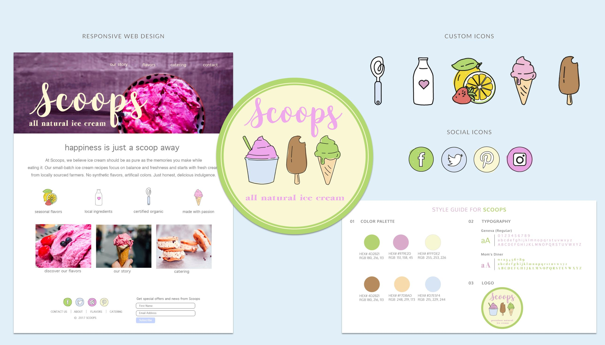

Scoops Natural Ice Cream
Scoops was a conceptual project born from a sweet collision of interests: a lifelong love for homemade ice cream and the technical milestone of completing a Front End Development course. I wanted the brand’s personality to be as vibrant and approachable as its flavors, so I created a suite of playful icons wrapped in a bright pastel palette. To translate that energy to the web, I focused on a streamlined interface that keeps the user experience front and center while remaining entirely development-ready.
Web Design
UI/UX Design
Brand Identity